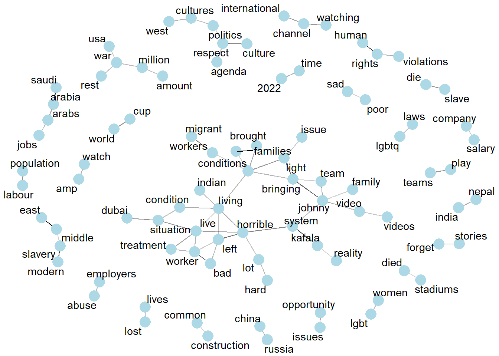

library(tidyverse)
library(tidyverse)
library(quanteda)
library(quanteda.textplots)
library(quanteda.textmodels)
library(ggplot2)
library(quanteda.dictionaries)
library(quanteda.sentiment)
library(syuzhet)
library(text2vec)
library(stm)
library(LDAvis)
library(tidytext)
library(igraph)
library(textdata)
knitr::opts_chunk$set(echo = TRUE)Introduction
The FIFA 2022 World Cup has captivated almost everyone’s attention this year. However, most of that attention has been focused on human rights violations that are present. The Host nation Qatar has been under pressure for these violations because of their treatment of foreigners in their country and their failure to be inclusive. Migrant workers that have helped build stadiums have been mistreated, underpaid, overworked and even killed leading up to the World Cup. The Host nation also has disallowed for the LGBTQ community to represent themselves because of the Host nations beliefs. Soccer Fans from both cultures (Host nation vs Foreigners) have argued over what values to respect on the global level.
Objectives
Find the overall Sentiment of the comments (Positive and Negative, Other emotions)
What is the main focus of discussion in the comments? What topic is most important to the people in the comments?
Based on the most important topics and the sentiment of those comments, are those comments classified correctly positive or negative? If yes, what are the comments POV? (western culture vs middle east culture) Are those comments “socially correct”? (logical/acceptable POV vs Stereotyped/Stigmatized POV)
Read in Data
Using Youtube API and Python, I was able to extract comments from nine videos covering the world cup in Qatar. The sources of the videos include BBC, Sky Sports News, France 21 and independent content creators. I chose videos based on the the amount of views. The comments I have scraped are the top 100 most relevant comments and the top 100 most recent comments from each video. The total number of comments I scraped was 1,391 . As a part of pre-processing my data, I removed all comments with less than 3 tokens in them using the tidyverse. I also removed any symbols, punctuation URLs , numbers and stopwords from my data . I tokenized my data using three different libraries, quanteda, tidytext and text2vec.
df_bbc<- read_csv("_data/comments_bbc.csv")
df_bbc<- df_bbc%>%
rename(text = "i")
df_bbc<- df_bbc %>%
select(text) %>%
mutate(text = str_remove_all(text,"39"))
df_bbc <- df_bbc %>%
select(text) %>%
mutate(text = str_remove_all(text,"<")) %>%
mutate(text = str_remove_all(text,">"))
corpus_bbc <- corpus(df_bbc)
corpus_bbc_summary <- summary(corpus_bbc)
corpus_bbc_summary$video <- "BBC"
docvars(corpus_bbc) <- corpus_bbc_summary
df_q<- read_csv("_data/comments_q.csv")
df_q<- df_q %>%
rename(text = "I’ll try to get the next video essay out in less than a month lol")
df_q<- df_q %>%
select(text) %>%
mutate(text = str_remove_all(text,"39"))
df_q <- df_q %>%
select(text) %>%
mutate(text = str_remove_all(text,"<")) %>%
mutate(text = str_remove_all(text,">"))
corpus_q <- corpus(df_q)
corpus_q_summary <- summary(corpus_q)
corpus_q_summary$video <- "Maqwell"
docvars(corpus_q) <- corpus_q_summary
df_qRev<- read_csv("_data/comments_qRev.csv")
df_qRev <- df_qRev%>%
rename(text = "I’ll try to get the next video essay out in less than a month lol")
df_qRev<- df_qRev %>%
select(text) %>%
mutate(text = str_remove_all(text,"39"))
df_qRev <- df_qRev %>%
select(text) %>%
mutate(text = str_remove_all(text,"<")) %>%
mutate(text = str_remove_all(text,">"))
corpus_qRev <- corpus(df_qRev)
corpus_qRev_summary <- summary(corpus_qRev)
corpus_qRev_summary$video <- "MaqwellRev"
docvars(corpus_qRev) <- corpus_qRev_summary
df_sky<- read_csv("_data/comments_sky.csv")
df_sky<- df_sky%>%
rename(text = "i")
df_sky<- df_sky %>%
select(text) %>%
mutate(text = str_remove_all(text,"39"))
df_sky <- df_sky %>%
select(text) %>%
mutate(text = str_remove_all(text,"<")) %>%
mutate(text = str_remove_all(text,">"))
corpus_sky <- corpus(df_sky)
corpus_sky_summary <- summary(corpus_sky)
corpus_sky_summary$video <- "sky"
docvars(corpus_sky) <- corpus_sky_summary
df_bbcQ <- read_csv("_data/comments_bbcQ.csv")
df_bbcQ<- df_bbcQ%>%
rename(text = "i")
df_bbcQ<- df_bbcQ %>%
select(text) %>%
mutate(text = str_remove_all(text,"39"))
df_bbcQ <- df_bbcQ %>%
select(text) %>%
mutate(text = str_remove_all(text,"<")) %>%
mutate(text = str_remove_all(text,">"))
corpus_bbcQ<- corpus(df_bbcQ)
corpus_bbcQ_summary <- summary(corpus_bbcQ)
corpus_bbcQ_summary$video <- "BBC"
df_bbcOL <- read_csv("_data/comments_bbcOL.csv")
df_bbcOL<- df_bbcOL%>%
rename(text = "i")
df_bbcOL<- df_bbcOL %>%
select(text) %>%
mutate(text = str_remove_all(text,"39"))
df_bbcOL <- df_bbcOL %>%
select(text) %>%
mutate(text = str_remove_all(text,"<")) %>%
mutate(text = str_remove_all(text,">"))
corpus_bbcOL<- corpus(df_bbcOL)
corpus_bbcOL_summary <- summary(corpus_bbcOL)
corpus_bbcOL_summary$video <- "BBC"
df_BI <- read_csv("_data/comments_BI.csv")
df_BI<- df_BI%>%
rename(text = "i")
df_BI<- df_BI %>%
select(text) %>%
mutate(text = str_remove_all(text,"39"))
df_BI <- df_BI %>%
select(text) %>%
mutate(text = str_remove_all(text,"<")) %>%
mutate(text = str_remove_all(text,">"))
corpus_BI<- corpus(df_BI)
corpus_BI_summary <- summary(corpus_BI)
corpus_BI_summary$video <- "Business Insider"
df_fra <- read_csv("_data/comments_fra.csv")
df_fra<- df_fra%>%
rename(text = "i")
df_fra<- df_fra %>%
select(text) %>%
mutate(text = str_remove_all(text,"39"))
df_fra <- df_fra %>%
select(text) %>%
mutate(text = str_remove_all(text,"<")) %>%
mutate(text = str_remove_all(text,">"))
corpus_fra<- corpus(df_fra)
corpus_fra_summary <- summary(corpus_fra)
corpus_fra_summary$video <- "France 21"
df_H <- read_csv("_data/comments_H.csv")
df_H<- df_H%>%
rename(text = "i")
df_H<- df_H %>%
select(text) %>%
mutate(text = str_remove_all(text,"39"))
df_H <- df_H %>%
select(text) %>%
mutate(text = str_remove_all(text,"<")) %>%
mutate(text = str_remove_all(text,">"))
corpus_H<- corpus(df_H)
corpus_H_summary <- summary(corpus_H)
corpus_H_summary$video <- "Harris"full_df <- rbind(df_bbc,df_q,df_qRev,df_sky,df_bbcQ,df_bbcOL,df_BI,df_fra,df_H)
full_df$id <- 1:nrow(full_df)
full_df$id <- as.character(full_df$id)
head(full_df)# A tibble: 6 × 2
text id
<chr> <chr>
1 Looking forward to it if you just act normal respect the culture and co… 1
2 Honestly every country in the world has done bad. May Allah bless these… 2
3 if you don't like it stay home and the last people talking about human … 3
4 So we can’t boycott a football game ( a trivial matter) to protest a r… 4
5 I see everyone kept their mouth shut with Russia&#;s world cup 5
6 Did Qatar invade any country and kill millions? Who are robbing Africa?… 6 full_corpus <- corpus(full_df$text)
full_corpus_summary<- summary(full_corpus)tokens1 <- tolower(full_df$text)
# performs tokenization
tokens1 <- word_tokenizer(tokens1,pos_remove = c("PUNCT", "DET", "ADP", "SYM", "PART", "AUX" ))
head(tokens1, 2)[[1]]
[1] "looking" "forward" "to" "it" "if"
[6] "you" "just" "act" "normal" "respect"
[11] "the" "culture" "and" "country" "and"
[16] "you" "will" "be" "ok" "no"
[21] "one" "needs" "to" "know" "someone"
[26] "is" "gay" "just" "like" "no"
[31] "one" "needs" "to" "know" "if"
[36] "you" "hetero" "just" "save" "that"
[41] "for" "behind" "closed" "doors" "and"
[46] "make" "sure" "it" "s" "between"
[51] "consenting" "adults" "children" "and" "animals"
[56] "are" "not" "consenting" "adults" "btw"
[61] "you" "perverts"
[[2]]
[1] "honestly" "every" "country" "in" "the" "world"
[7] "has" "done" "bad" "may" "allah" "bless"
[13] "these" "workers" "who" "have" "done" "so"
[19] "much" "for" "the" "country" "however" "to"
[25] "call" "it" "slavery" "is" "too" "far"
[31] "they" "r" "not" "taking" "them" "without"
[37] "there" "will" "like" "when" "british" "and"
[43] "americans" "killed" "and" "took" "thousands" "of"
[49] "slaves" "they" "come" "here" "for" "better"
[55] "options" "of" "course" "it" "can" "be"
[61] "better" "however" "it" "is" "much" "better"
[67] "than" "what" "was" "happening" "to" "them"
[73] "in" "their" "own" "countries"full_tokens <- tokens(full_corpus,
remove_numbers = T,
remove_url = T,
remove_punct = T,
remove_symbols = T)
full_tokens <-tokens_tolower(full_tokens)
full_tokens <- tokens_select(full_tokens,
pattern = c(stopwords("en"),"quot","href","don"),
selection = "remove",
min_nchar = 3)
head(full_tokens, 2)Tokens consisting of 2 documents.
text1 :
[1] "looking" "forward" "just" "act" "normal" "respect" "culture"
[8] "country" "one" "needs" "know" "someone"
[ ... and 22 more ]
text2 :
[1] "honestly" "every" "country" "world" "done" "bad"
[7] "may" "allah" "bless" "workers" "done" "much"
[ ... and 25 more ]WordClouds and TF-IDF
My first step is to do some exploratory analysis to see the most frequent and important terms in my corpus. TF-IDF is intended to measure how important a word is to a document in a collection (or corpus) of documents. I am looking for high TF-IDF values. Using a word cloud will display the frequency of my terms in my corpus.
set.seed(1245)
full_dfm <- dfm(full_tokens)
smaller_dfm <- dfm_trim(full_dfm, min_termfreq = 2)
full_dfm_tfidf <- dfm_tfidf(smaller_dfm)
textplot_wordcloud(smaller_dfm, min_count = 40, random_order = FALSE)topfeatures(full_dfm_tfidf,50) qatar world people cup workers country countries
282.35169 278.88022 249.95985 218.45006 213.95836 205.22592 200.27005
just like can human one work rights
192.69143 189.64580 188.09018 154.31723 154.28810 151.48861 147.48920
even fifa football respect see get really
130.13915 128.56978 127.23205 122.62079 121.78159 119.58720 112.11300
good video western know many migrant money
109.62160 108.02355 107.75301 107.31365 107.28179 106.03057 105.38019
now years make time west also want
103.36550 102.87957 101.11145 99.35274 99.19814 98.19723 97.12021
culture conditions much never well middle say
96.77193 94.56548 93.12160 92.59565 91.39109 87.47787 87.47787
think love still every working going thing
86.93365 86.49862 86.06694 86.02204 85.58083 84.17787 82.79395
india
82.36553 This word cloud depicts the frequency of words that were counted more than 40 times in the corpus. Words like workers, culture, migrant, western, rights and human shown in the word cloud imply that the common discussion within these comments could be about the clash of cultural difference between visitors of the world cup and the people who live in Qatar. The word workers being large suggests that the discussion of how workers were treated during the build up of the World Cup is common in the corpus. Based on TF_IDF ranking, I pulled the top 50 most important terms from my corpus. Numerically, I can see words like workers, fifa, respect, rights, human and culture are ranked highly in my corpus.
Sentiment Analysis
For Sentiment Analysis I used the packages tidytext and sentimentr. Sentimentr attempts to take into account valence shifters (i.e., negators, amplifiers (intensifiers), de-amplifiers (downtoners), and adversative conjunctions). This will give me better results than before. I then pulled the most positive and negative comments from the corpus to analyze.
library(sentimentr)
mytext <- get_sentences(full_df$text)
senti<- sentiment_by(mytext)
senti<- senti %>%
filter(word_count > 4)
qplot(senti$ave_sentiment, geom="histogram",binwidth=0.1,main="Sentiment Histogram")
writeLines(head(full_corpus[which(senti$ave_sentiment >.5)]))a country that has modern day slavery, human rights abuses, sharia law which is extremely discriminatory to women and people of any other religion other than Islam and Christianity, one of the highest death rates of workers, yet it&#;s okay to play football there, amazing isn&#;t it, people say money can&#;t buy you everything, show them this shitshow
This Arabic nation is little humanitarian concepts among workers , especially home maid workers conditions are very brutal no human rights and laws. like fisherman attitude.
A golden opportunity to combat negative stereotypes... used to make them worse.
Chad Qatar : Bribes Virgin West to submission. Humiliaties the West. Doesn&#;t care about stupid lgbt flag. Profits
now do the same when US host a worldwide event lol
Im glad someone made a vid about this, I lived in Doha for 8 years and recently left back to my country. Whenever I would go home from school you could see workers being forced to work in the summers peak temp hour even though it was made illegal to work from 12pm to 4pm or something like that? Theres also a huge lack of safety, cranes with cargo would be moved OVER MOVING TRAFFIC:brbrTo any adults who plan to go to the world cup I will tell you now that many places in Qatar will not serve alchoholic drinks because they need a license and can only purchase their alchohol from QDC. So if you do want alchohol I&#;d reccommend going to a hotel like the Grand Hyatt or something. So don&#;t get upset if ya cant find a place to get beer. (but in the stadium there will be alchohol drinking zones).writeLines(head(full_corpus[which(senti$ave_sentiment < -0.5)]))If this was Russia most teams would have pulled out!
When is the west going to respecting other countries without pushing their agenda, I mean we all know this ain’t about the workers sharing rooms or the stadium being moveable ( it’s about the west pushing so called LGBQT) no wonder why only the west condemned Russia and the world didn’t
Fertilizer I am a Qatari expatriate. There are many workers in Qatar who work for 6/7 years. They work for the old wages. The company does not increase their wages. Many people have been able to change their jobs and have benefited a lot from the introduction of government without noc system. If the Qatari government had given the opportunity to the workers who have been working in Qatar for more than 5 years to change the kafala without noc, the workers in Qatar would have benefited a lot.
Half the British clowns are mad because, they don’t get to drink 🤡
Is the homophobic, slave-using, dictatorship of Qatar`s lack of feeling shame news ?
Qatar should improve migrants workers conditions. SHAME on you QatarThe overall sentiment of the corpus is skewed right, suggesting that most of the comments are negative. The most positive comments show more western culture beliefs and criticisms of Qatar. The reasoning and language the commenters use are socially acceptable based on their knowledge of the situation in Qatar and their experiences. Some of the comments are jokes but the main points get across about their beliefs. The most negative comments are more hateful in their beliefs about the opposing culture. The commenters are not using any reasonable judgment to make their claims.
Dictionary Analysis
I chose to use the NRC dictionary to visualize the contribution of terms to emotional sentiment.
post_clean <- full_df %>%
select(text) %>%
unnest_tokens(word, text) %>%
filter(!word %in% stop_words$word) %>%
filter(word != "https") %>%
filter(word != "href") %>%
filter(word != "www.youtube.com")
sentiment_word_counts <- post_clean %>%
inner_join(get_sentiments("nrc")) %>%
count(word, sentiment, sort = TRUE) %>%
ungroup()Joining with `by = join_by(word)`Warning in inner_join(., get_sentiments("nrc")): Detected an unexpected many-to-many relationship between `x` and `y`.
ℹ Row 4 of `x` matches multiple rows in `y`.
ℹ Row 1506 of `y` matches multiple rows in `x`.
ℹ If a many-to-many relationship is expected, set `relationship =
"many-to-many"` to silence this warning.sentiment_word_counts<- sentiment_word_counts %>%
filter(word != "don")
sentiment_word_counts %>%
group_by(sentiment) %>%
top_n(9) %>%
ungroup() %>%
mutate(word = reorder(word, n)) %>%
ggplot(aes(word, n, fill = sentiment)) +
geom_col(show.legend = FALSE) +
facet_wrap(~sentiment, scales = "free_y") +
labs(title = "Sentiment terms",
y = "Contribution to sentiment",
x = NULL) +
coord_flip()Selecting by nI can see that the words “slavery”, “government” , “Corruption”, and “treat” dominate negative emotions. Anticipation and Anger are two emotions I want to look at because they relate well to the lead up of the World Cup. Seeing “respect” contribute to the emotion Anticipation could associate that fans are expecting respect of all cultures and people at the World Cup. The emotion Anger reveals the words money and politics are contributing to the emotional distress of fans.
Topic Model
For LDA topic Modeling, I used the package text2vec. I found that the best value for K ranges form 5-10 from the my last blog post. I then extract the top 10 words from my topics. In this example, I set k=7.
it1 <- itoken(tokens1, ids = full_df$id, progressbar = FALSE)
stop_words1 = c("i", "me", "my", "myself", "we", "our", "ours", "ourselves", "you", "your", "yours","a","the","in","as","on", "is","it", "to","of","are","not","and","quot","don","youtu.be","an","have","this","if","they","v","2","their","can", "than","ve")
v1 <- create_vocabulary(it1,stopwords = stop_words1)
v1Number of docs: 1391
37 stopwords: i, me, my, myself, we, our ...
ngram_min = 1; ngram_max = 1
Vocabulary:
term term_count doc_count
1: 0.25 1 1
2: 0m58s 1 1
3: 1.2 1 1
4: 1.5 1 1
5: 10,000 1 1
---
5962: people 333 247
5963: world 425 307
5964: qatar 481 360
5965: that 609 362
5966: for 636 417#v1 <- prune_vocabulary(v1, term_count_min = 5)
vectorizer1 <- vocab_vectorizer(v1)
dtm1 <- create_dtm(it1, vectorizer1, type = "dgTMatrix")
lda_model1 <- LDA$new(n_topics = 5, doc_topic_prior = 0.1,
topic_word_prior = 0.01)
doc_topic_distr1 <-
lda_model1$fit_transform(x = dtm1, n_iter = 1000,
convergence_tol = 0.001, n_check_convergence = 25,
progressbar = FALSE)INFO [13:20:26.198] early stopping at 150 iteration
INFO [13:20:26.750] early stopping at 75 iterationlda_model1$get_top_words(n = 10,
lambda = 0.1) [,1] [,2] [,3] [,4] [,5]
[1,] "east" "2022" "watch" "got" "must"
[2,] "india" "worker" "https" "problem" "million"
[3,] "nations" "shame" "href" "fact" "qatari"
[4,] "anything" "issue" "change" "videos" "through"
[5,] "day" "cup" "war" "labor" "truth"
[6,] "doing" "another" "gay" "ago" "end"
[7,] "away" "build" "www.youtube.com" "n" "violations"
[8,] "called" "kind" "boycott" "yeah" "worked"
[9,] "indian" "next" "game" "less" "off"
[10,] "population" "africa" "her" "long" "business" lda_model1$plot()Loading required namespace: servrThe Topic Model implies that the major topic of discussion surrounds how migrant workers were treated. The other topics in the model suggests respecting the laws of the host country, violation of human rights and government values.The first topic specifically is about where workers came from and how they were treated. Topic 6 specifically highlights the discussion of respect of a countries’ laws and culture.
Semantic and Pairwise Correlation Network
The packages I used for Semantic and Pairwise Analysis include quanteda, widyr and ggraph. Here I wanted to learn a bit more about what features co-occur and correlation among words, by creating networks for both will help me examine this.
full_fcm <- fcm(smaller_dfm)
# keep only top features.
small_fcm <- fcm_select(full_fcm, pattern = names(topfeatures(full_fcm, 60)), selection = "keep")
# compute weights.
size <- log(colSums(small_fcm))
# create network.
textplot_network(small_fcm, vertex_size = size / max(size) * 4)Here I created a Semantic Network of the top 60 terms in the FCM. I see the heart of the network revolves around political terms. The two terms political and war seem to co occur with a lot of other terms. This could imply that some comments are discussion a war between different political views .I also see a sub network that links travelers to law,laws and alcohol. This implies that people visiting the world cup must follow the laws in place, especially the no alcohol law.
Here I want to examine correlation among words, which indicates how often they appear together relative to how often they appear separately. The pairwise_cor() function in widyr lets us find the phi coefficient between words based on how often they appear in the same section. Here I pick particular terms of interest and find the other terms most associated with them and create a visualization of the correlations and clusters of words.
section_words <- full_df %>%
mutate(section = row_number() %/% 10) %>%
filter(section > 0) %>%
unnest_tokens(word, text) %>%
filter(!word %in% stop_words$word) %>%
filter(word != "https") %>%
filter(word != "href") %>%
filter(word != "www.youtube.com") %>%
filter(word != "youtu.be") %>%
filter(word!= "3") %>%
filter(word!= "2") %>%
filter(word!= "1") %>%
filter(word!= "12") %>%
filter(word!= "ve")
library(widyr)
library(ggraph)
word_cors <- section_words %>%
group_by(word) %>%
filter(n() >= 15) %>%
pairwise_cor(word, section, sort = TRUE)
set.seed(2016)
word_cors %>%
filter(correlation > .35) %>%
graph_from_data_frame() %>%
ggraph(layout = "fr") +
geom_edge_link(aes(edge_alpha = correlation), show.legend = FALSE) +
geom_node_point(color = "lightblue", size = 5) +
geom_node_text(aes(label = name), repel = TRUE) +
theme_void()
word_cors %>%
filter(item1 %in% c("western", "qatar", "lgbtq", "workers","rights","respect","country","cultures")) %>%
group_by(item1) %>%
slice_max(correlation, n = 6) %>%
ungroup() %>%
mutate(item2 = reorder(item2, correlation)) %>%
ggplot(aes(item2, correlation)) +
geom_bar(stat = "identity") +
facet_wrap(~ item1, scales = "free") +
coord_flip()The Words of interest that I picked include “western”, “qatar”, “lgbtq”, “workers”,“rights”,“respect”,“country”,“cultures”. The correlation between the words respect and culture, politics suggests that respecting the culture and politics of a certain region is being discussed when talking about respect. The Visualization shows the correlation between many words. The relationships here are symmetrical, rather than directional. The connections between words help verify what topics are being discussed in all of the comments. For example, the cluster surrounding the word “worker” shows that the word is correlated with negative terms that relate to the treatment and condition they received.
Limitations
The conclusions drawn cannot be fully proven from the current data , but they are enough to encourage further research.The data was only collected in a small scope compared to other projects. This is because of Youtube API did not let me scrape more than 100 comments per video. Many comments had typos in them, which hurts my analysis because some of the misspelled words could of been valuable. The topics of the videos may have skewed the conversation of the comments because the videos come from different sources.